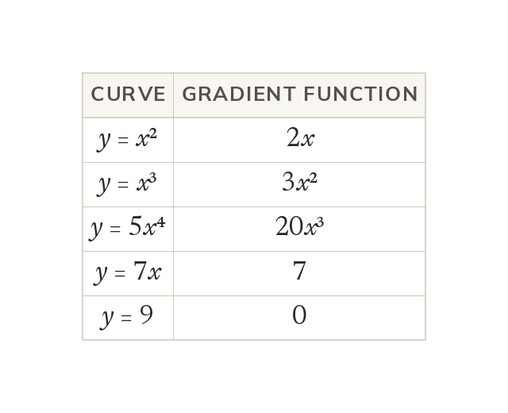

The power comes down and drops by one
The gradient function dydx gives the gradient at every point. For y = xⁿ, the power comes down and drops by one.
The gradient function dydx gives the gradient of the curve at every point. For y = xⁿ, dydx = nxⁿ⁻¹: the power multiplies and then drops by one.